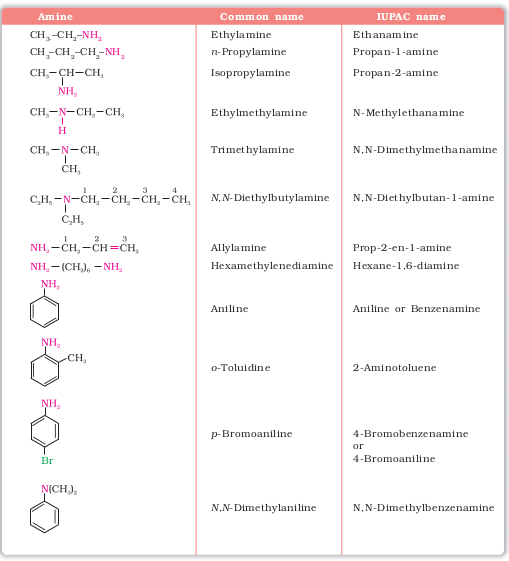

In common system, an aliphatic amine is named by prefixing alkyl group to amine, i.e., alkylamine as one word (e.g., methylamine). In secondary and tertiary amines, when two or more groups are the same, the prefix di or tri is appended before the name of alkyl group. In IUPAC system, amines are named as alkanamines, derived by replacement of 'e' of alkane by the word amine. For example, CH3NH2 is named as methanamine. In case, more than one amino group is present at different positions in the parent chain, their positions are specified by giving numbers to the carbon atoms bearing –NH2 groups and suitable prefix such as di, tri, etc. is attached to the amine. The letter 'e' of the suffix of the hydrocarbon part is retained. For example, H2N–CH2–CH2–NH2 is named as ethane-1, 2-diamine.
In arylamines, –NH2 group is directly attached to the benzene ring. C6H5NH2 is the simplest example of arylamine. In common system, it is known as aniline. It is also an accepted IUPAC name. While naming arylamines according to IUPAC system, suffix 'e' of arene is replaced by 'amine'. Thus in IUPAC system, C6H5–NH2 is named as benzenamine. Common and IUPAC names of some alkylamines and arylamines are given.
Nomenclature of Some Alkylamines and Arylamines
